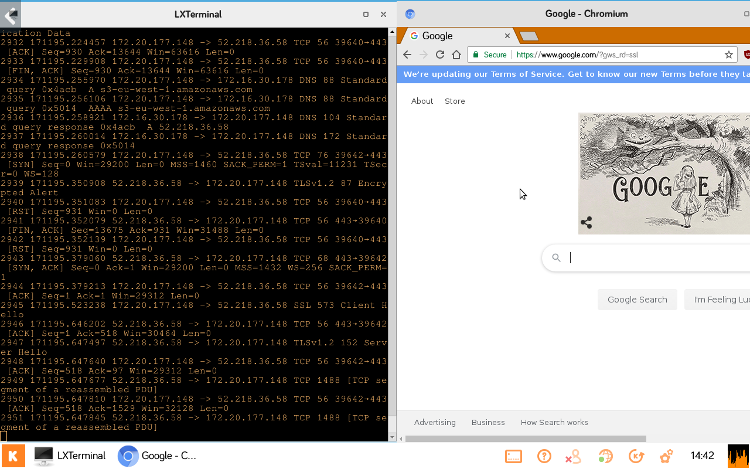
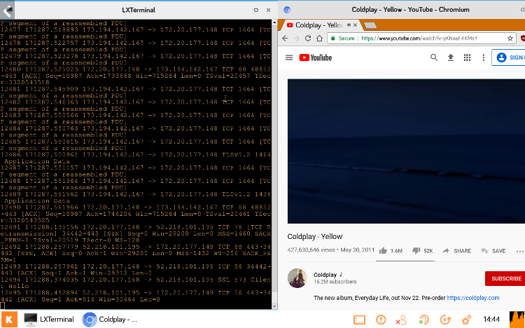

My experience with Kano
Kano was something that helped with my understanding of code a lot. Before I never truly understood how commands worked but there is a lot that goes on in a system that more users don’t comprehend. The more processing that a CPU has to do the more commands that are input into the system. This was especially clear when the terminal was opened and compared between a search engine and a video streaming service.
 